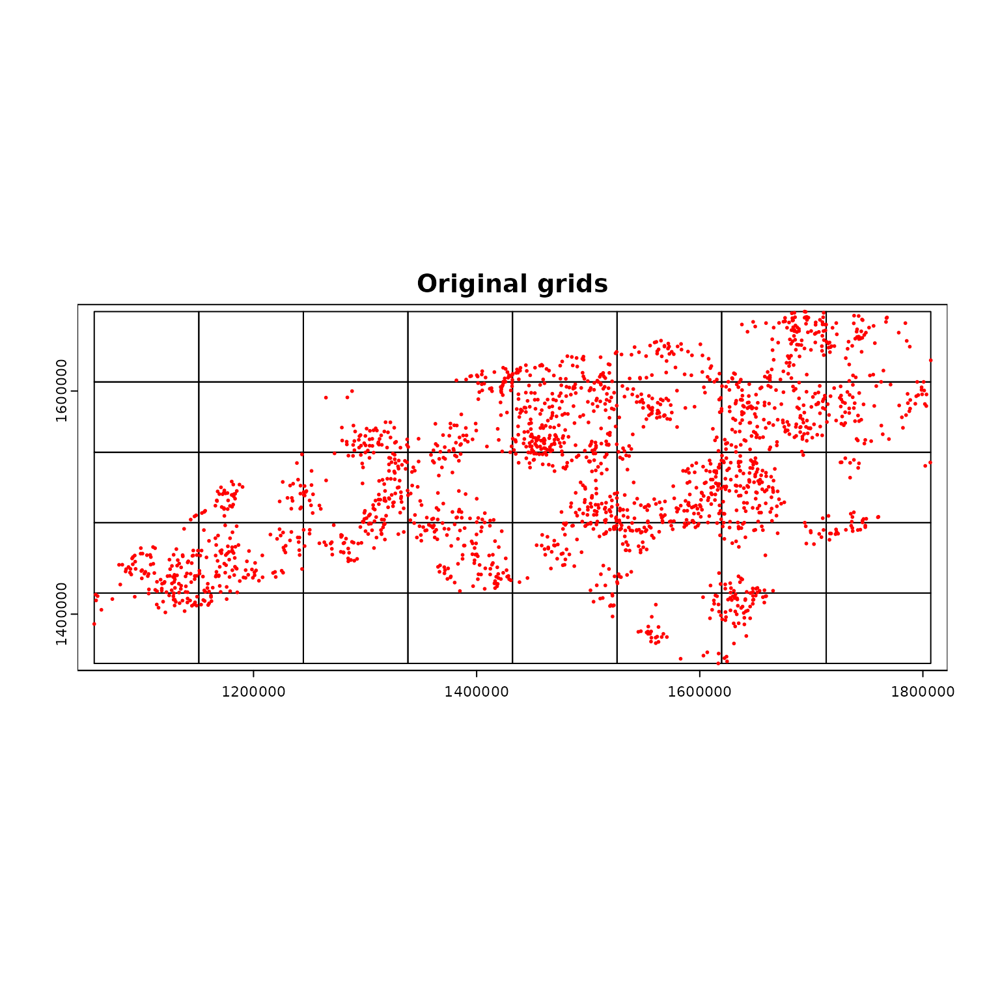
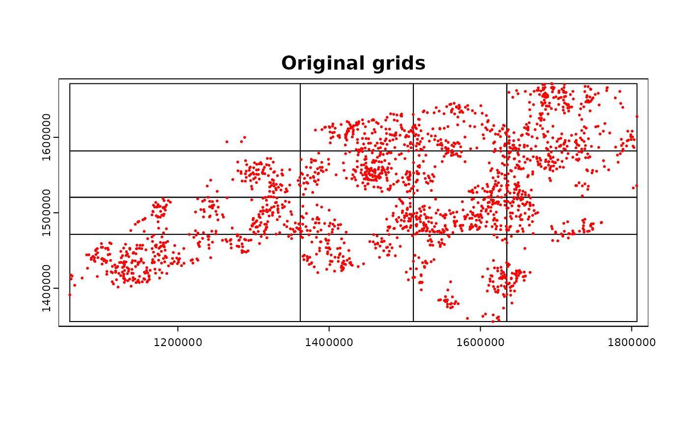
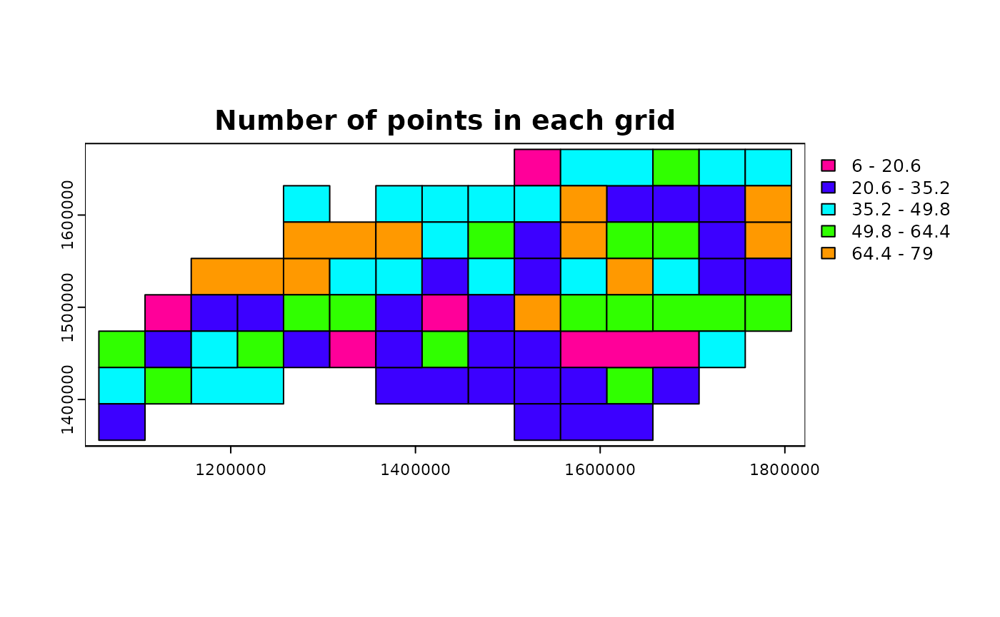
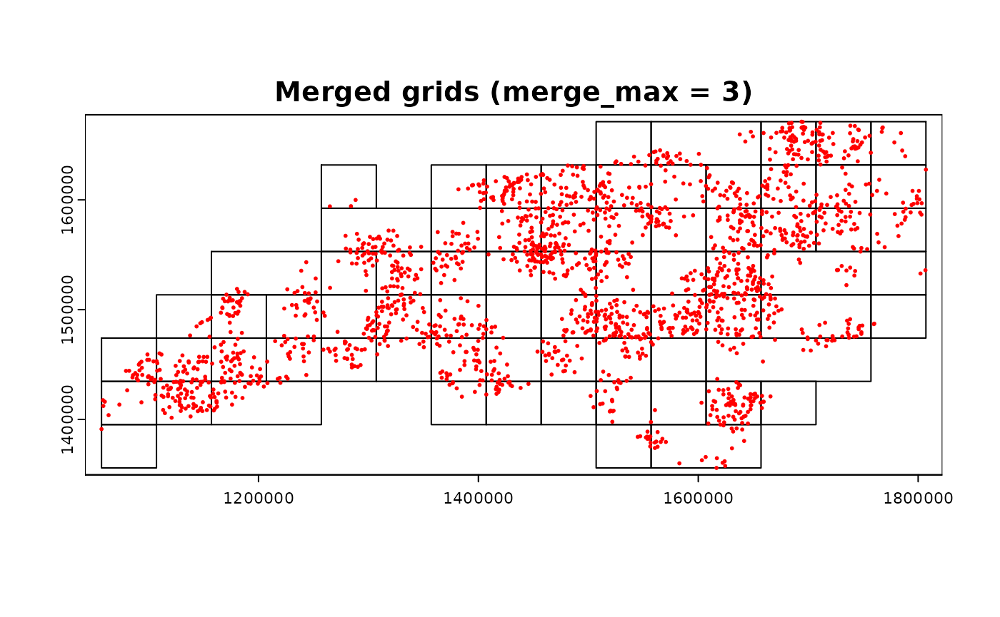
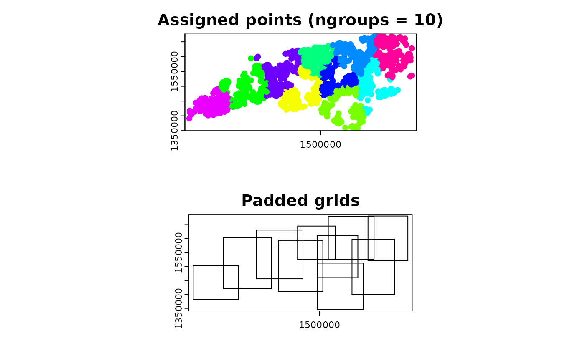

##
## Attaching package: 'dplyr'## The following objects are masked from 'package:stats':
##
## filter, lag## The following objects are masked from 'package:base':
##
## intersect, setdiff, setequal, union## Linking to GEOS 3.10.2, GDAL 3.4.1, PROJ 8.2.1; sf_use_s2() is TRUE## terra 1.7.78##
## Attaching package: 'igraph'## The following objects are masked from 'package:terra':
##
## blocks, compare, union## The following objects are masked from 'package:dplyr':
##
## as_data_frame, groups, union## The following objects are masked from 'package:stats':
##
## decompose, spectrum## The following object is masked from 'package:base':
##
## union
options(sf_use_s2 = FALSE)Computational grids
- Computational grids refer to a set of polygons that cover the entire spatial domain of interest. These grids are used to split the spatial domain into smaller pieces for parallel processing.
-
chopinprovides functions to generate computational grids for parallel processing bypar_grid()function. - The standard sequence of running
par_grid()includes the following steps:- Generate computational grids with
par_pad_grid()orpar_pad_balanced(). This step will give you a set of grid polygons, one of which is original splits and the other is padded in consideration of buffer radius in the subsequent spatial operations. - Run
par_grid()with the input dataset and the grid polygons.
- Generate computational grids with
- Before advancing, we define terms for clarity.
- Input data: the data where the computed value will be stored. For example, when extracting raster values with vector objects, vector objects are the input data.
- Target data: the data from which the values come. In the example above, raster object is the target data.
- Original and padded grids will be used to split the main input with the original grid and the target dataset for computation with the padded grid, respectively.
Types of computational grids and their generation
- There are two approaches to generate computational grids. One is to
use
par_pad_grid()with one of threemodes and the other is to usepar_group_grid(). Thus, users have four options in total to generate computational grids. -
paddingargument is very important to ensure the accurate parallel operations in a case where buffering is involved. Suppose a user has point geometry inputs and apply circular buffer with a certain radius. Since the original grid (without padding = no overlap between adjacent grids) filters the original input in each parallel worker, points near each grid border may miss target data as buffered polygons exceed the grid.
par_pad_grid(): standard interface
-
par_pad_grid()generates regular grid polygons with padding for parallel processing. Padding is the distance of overlapping between grid polygons, essentially from the buffer radius of the points when buffer polygons are concerned. -
par_pad_grid()supports three internalmodes:-
mode = "grid": generates regular grid polygons with padding,nxandnyarguments determine the number of columns and rows in the grid, respectively. -
mode = "grid_quantile": generates regular grid polygons with padding based on quantiles of the number of points in each grid. The grids will look irregular and the points per grid will be more balanced than thegridmode. -
mode = "grid_advanced": generates regular grid polygons with padding based on the number of points in each grid and the number of points in the entire dataset.nxandnyarguments determine the number of columns and rows in the grid, thenmerge_maxargument controls how many adjacent grids are merged into one grid.grid_min_featuresargument determines the minimum number of points in each grid, which means grids with fewer points than this value will be merged with adjacent grids. Adjusting these arguments can balance the computational load among the threads and reduce the overhead of parallelization.
-
par_pad_balanced(): focusing on getting the balanced
clusters
-
par_pad_balanced()groups the inputs into equal size, then generates padded rectangles that cover the same number of points per grid. Users can use the output of this function intopar_grid()for parallel processing.
Random points in NC
- For demonstration of
par_pad_grid(), we use moderately clustered point locations generated inside the counties of North Carolina.
ncpoly <- system.file("shape/nc.shp", package = "sf")
ncsf <- sf::read_sf(ncpoly)
ncsf <- sf::st_transform(ncsf, "EPSG:5070")
plot(sf::st_geometry(ncsf))
# sampling clustered point
library(spatstat.random)## Loading required package: spatstat.data## Loading required package: spatstat.univar## spatstat.univar 3.0-0## Loading required package: spatstat.geom## spatstat.geom 3.3-2##
## Attaching package: 'spatstat.geom'## The following objects are masked from 'package:igraph':
##
## diameter, edges, is.connected, vertices## The following objects are masked from 'package:terra':
##
## area, delaunay, is.empty, rescale, rotate, shift, where.max,
## where.min## spatstat.random 3.3-1
set.seed(202404)
ncpoints <-
sf::st_sample(
x = ncsf,
type = "Thomas",
mu = 20,
scale = 1e4,
kappa = 1.25e-9
)
ncpoints <- ncpoints[seq_len(2e3L), ]
ncpoints <- sf::st_as_sf(ncpoints)
ncpoints <- sf::st_set_crs(ncpoints, "EPSG:5070")
ncpoints$pid <- sprintf("PID-%05d", seq(1, nrow(ncpoints)))
plot(sf::st_geometry(ncpoints))
# convert to terra SpatVector
ncpoints_tr <- terra::vect(ncpoints)Visualize computational grids
- The output of
par_pad_grid()andpar_pad_balanced()is length 2 list. A significant difference between the two is the first element of the output. Inpar_pad_grid(), it is always a sf or SpatVector object with polygon geometries. On the other hand,par_pad_balanced()will have the first element as a sf or SpatVector object with the same geometry type as the original input. For example, it will have point geometries if the input was point.
compregions <-
chopin::par_pad_grid(
ncpoints_tr,
mode = "grid",
nx = 8L,
ny = 5L,
padding = 1e4L
)
# a list object
class(compregions)## [1] "list"
# length of 2
names(compregions)## [1] "original" "padded"
par(mfrow = c(2, 1))
plot(compregions$original, main = "Original grids")
plot(compregions$padded, main = "Padded grids")Generate regular grid computational regions
-
chopin::par_pad_grid()takes a spatial dataset to generate regular grid polygons withnxandnyarguments with padding. Users will have both overlapping (by the degree ofradius) and non-overlapping grids, both of which will be utilized to split locations and target datasets into sub-datasets for efficient processing.
compregions <-
chopin::par_pad_grid(
ncpoints_tr,
mode = "grid",
nx = 8L,
ny = 5L,
padding = 1e4L
)- The output of
par_pad_grid()is a list object with two elements namedoriginal(non-overlapping grid polygons) andpadded(overlapping bypadding). The class of each element depends on the input dataset class. The figures below illustrate the grid polygons with and without overlaps.
names(compregions)## [1] "original" "padded"
oldpar <- par()
par(mfrow = c(2, 1))
terra::plot(compregions$original, main = "Original grids")
terra::plot(compregions$padded, main = "Padded grids")
par(mfrow = c(1, 1))
terra::plot(compregions$original, main = "Original grids")
terra::plot(ncpoints_tr, add = TRUE, col = "red", cex = 0.4)
Split the points by two 1D quantiles
-
mode = "grid_quantile"generates regular grid polygons with padding based on quantiles of the coordinates in each dimension. - When using this mode, users should define
quantilesargument, which will be used to get the same number of quantiles in each dimension. A convenient way to defineseq()function withlength.outargument. The example below useslength.out = 5, which will give quartiles.
grid_quantiles <-
chopin::par_pad_grid(
input = ncpoints_tr,
mode = "grid_quantile",
quantiles = seq(0, 1, length.out = 5),
padding = 1e4L
)
names(grid_quantiles)## [1] "original" "padded"
par(mfrow = c(2, 1))
terra::plot(grid_quantiles$original, main = "Original grids")
terra::plot(grid_quantiles$padded, main = "Padded grids")
par(mfrow = c(1, 1))
terra::plot(grid_quantiles$original, main = "Original grids")
terra::plot(ncpoints_tr, add = TRUE, col = "red", cex = 0.4)
Merge the grids based on the number of points
-
mode = "grid_advanced"utilizes finer grids to merge the results from the finer grids into the coarser grids. This behavior can balance the computational load among the threads and reduce the overhead of parallelization. That said, this mode internally generates grids inmode = "grid"and merges them based on the number of points in each grid. - To determine the adjacency and merging behavior, minimum spanning
tree (MST) is identified. The function utilizes
igraph::mst()for MST identification and other graph summary functions under the hood. - As a note, users can adjust the merging behavior by changing the
arguments
grid_min_featuresandmerge_max.
grid_advanced1 <-
chopin::par_pad_grid(
input = ncpoints_tr,
mode = "grid_advanced",
nx = 15L,
ny = 8L,
padding = 1e4L,
grid_min_features = 25L,
merge_max = 5L
)## Switch terra class to sf...
## Switch terra class to sf...
## ℹ The merged polygons have too complex shapes.
## Increase threshold or use the original grids.
##
## Switch sf class to terra...
par(mfrow = c(2, 1))
terra::plot(grid_advanced1$original, main = "Original grids")
terra::plot(grid_advanced1$padded, main = "Padded grids")
par(mfrow = c(1, 1))
terra::plot(grid_advanced1$original, main = "Merged grids (merge_max = 5)")
terra::plot(ncpoints_tr, add = TRUE, col = "red", cex = 0.4)
ncpoints_tr$n <- 1
n_points <-
terra::zonal(
ncpoints_tr,
grid_advanced1$original,
fun = "sum")[["n"]]
grid_advanced1g <- grid_advanced1$original
grid_advanced1g$n_points <- n_points
terra::plot(grid_advanced1g, "n_points", main = "Number of points in each grid")
Different values in merge_max
- Keeping other arguments the same, we can see the difference in the
number of merged grids by changing the
merge_maxargument.
grid_advanced2 <-
chopin::par_pad_grid(
input = ncpoints_tr,
mode = "grid_advanced",
nx = 15L,
ny = 8L,
padding = 1e4L,
grid_min_features = 15L,
merge_max = 4L
)## Switch terra class to sf...
## Switch terra class to sf...
## ℹ The merged polygons have too complex shapes.
## Increase threshold or use the original grids.
##
## Switch sf class to terra...
par(mfrow = c(2, 1))
terra::plot(grid_advanced2$original, main = "Original grids")
terra::plot(grid_advanced2$padded, main = "Padded grids")
par(mfrow = c(1, 1))
terra::plot(grid_advanced2$original, main = "Merged grids (merge_max = 8)")
terra::plot(ncpoints_tr, add = TRUE, col = "red", cex = 0.4)
grid_advanced3 <-
chopin::par_pad_grid(
input = ncpoints_tr,
mode = "grid_advanced",
nx = 15L,
ny = 8L,
padding = 1e4L,
grid_min_features = 25L,
merge_max = 3L
)## Switch terra class to sf...
## Switch terra class to sf...
## ℹ The merged polygons have too complex shapes.
## Increase threshold or use the original grids.
##
## Switch sf class to terra...
par(mfrow = c(2, 1))
terra::plot(grid_advanced3$original, main = "Original grids")
terra::plot(grid_advanced3$padded, main = "Padded grids")
par(mfrow = c(1, 1))
terra::plot(grid_advanced3$original, main = "Merged grids (merge_max = 3)")
terra::plot(ncpoints_tr, add = TRUE, col = "red", cex = 0.4)
par_make_balanced()
-
par_make_balanced()usesanticlustpackage to split the point set into the balanced clusters.- In the background,
par_pad_balanced()is run first to generate the equally sized clusters from the input. Then, padding is applied to the extent of each cluster to be compatible withpar_grid(), where both the original and the padded grids are used. - Please note that
ngroupsargument value must be the exact divisor of the number of points. For example, in the example below, when one changesngroupsto10L, it will fail as the number of points is not divisible by 10. - Consult the
anticlustpackage for more details on the algorithm.
- In the background,
-
par_pad_balanced()makes a compatible object to the output ofpar_pad_grid()directly from the input points. - As illustrated in the figure below, the points will be split into
ngroupsclusters with the same number of points then processed in parallel by using the output object withpar_grid().
# ngroups should be the exact divisor of the number of points!
group_bal_grid <-
chopin::par_pad_balanced(
points_in = ncpoints_tr,
ngroups = 10L,
padding = 1e4
)
group_bal_grid$original$CGRIDID <- as.factor(group_bal_grid$original$CGRIDID)
par(mfrow = c(2, 1))
terra::plot(group_bal_grid$original, "CGRIDID",
legend = FALSE,
main = "Assigned points (ngroups = 10)")
terra::plot(group_bal_grid$padded, main = "Padded grids")